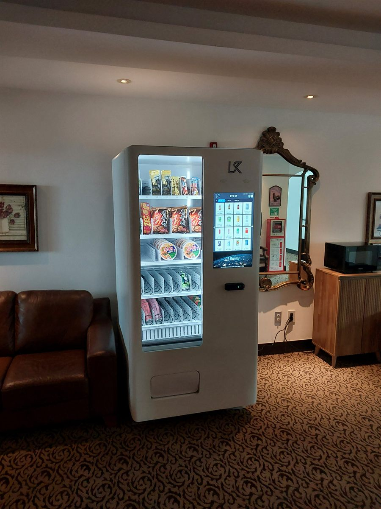

사무실 건물에 자판기를 놓는 일은 식당이나 매장에 놓는 것과 성격이 완전히 다릅니다. 매장 자판기는 지나가던 사람이 사는 기계지만, 사무실 라운지의 자판기는 같은 사람이 매일 쓰는 기계입니다. 손님이 아니라 단골만 있는 셈입니다. 그래서 "오늘 뭐가 있나" 보다 "늘 사던 게 늘 있나"가 훨씬 중요합니다. 어제 사 먹던 라면이 오늘 품절이면 그다음부터는 아예 안 봅니다. 사진이 그 구성입니다. 가죽 소파가 놓인 휴게 라운지 한쪽 벽, 전자레인지 바로 옆자리입니다.
자리를 보러 가서 확인한 것은 세 가지였습니다. 첫째는 라운지 안에서의 위치입니다. 공유오피스 라운지는 보통 소파 구역·탕비 구역·통로가 한 공간에 섞여 있습니다. 소파 정면에 기계를 세우면 쉬는 사람과 기계 앞에 선 사람이 마주 보게 되어 둘 다 불편합니다. 그래서 소파 옆 벽, 그러니까 앉은 사람의 시선을 가리지 않으면서 탕비 구역에서 두세 걸음이면 닿는 자리를 잡았습니다. 둘째는 전원입니다. 사진에서 보이듯 라운지 벽에는 이미 전자레인지가 물려 있습니다. 전자레인지와 자판기를 한 콘센트에 같이 물리면 안 됩니다. 전자레인지는 돌아가는 순간 순간전력이 크게 올라가는 기기라, 냉장 자판기 압축기가 같이 걸리면 차단기가 떨어질 수 있습니다. 분전반에서 회로를 확인하고 다른 쪽을 썼습니다. 셋째는 카펫 바닥입니다. 사무실 라운지는 카펫 타일이 많은데, 카펫은 눈으로 수평을 못 봅니다. 게다가 기계 무게가 한쪽 바퀴에 몰리면 카펫이 눌려 시간이 지나면서 기울어집니다. 수평계를 올려 다리를 돌려 잡고, 바퀴 자국이 생기지 않게 받침을 썼습니다.
성동 공유오피스 라운지에 맞는 구성
칸 배치는 사진처럼 위에서 아래로 성격을 바꿔 짰습니다. 맨 윗칸은 봉지 과자처럼 가볍고 부피만 큰 것을 세워 넣었습니다. 가벼운 품목은 스프링이 한 바퀴 돌아도 제자리에 남는 일이 있어서 앞으로 바짝 당겨 세우는 것이 요령입니다. 그 아래 두 칸은 봉지 스낵과 컵라면입니다. 컵라면은 지름이 있고 모양이 일정해서 칸에 잘 맞고, 무엇보다 전자레인지와 정수기가 옆에 있는 라운지에서는 가장 잘 나가는 품목입니다. 아래 두 칸은 생수와 캔음료, 페트 음료를 눕혀 깔았습니다. 무거운 것을 아래에 두면 기계가 덜 흔들리고 떨어지는 높이도 줄어듭니다.
사무실 자판기에서 흔히 하는 실수가 처음부터 품목을 너무 많이 벌이는 것입니다. 칸마다 다른 것을 넣으면 보기에는 좋은데, 열 명 남짓이 쓰는 라운지에서는 한 종류가 하루에 하나도 안 나가는 칸이 생깁니다. 그래서 처음에는 잘 나갈 것 같은 열 종류 안쪽으로 줄이고 수량을 늘리는 쪽으로 갔습니다. 한 달 돌려 보고 안 팔리는 것은 빼고 잘 나가는 것은 칸을 늘리면 됩니다. 결제는 카드와 삼성페이·카카오페이·네이버페이를 받고 현금함은 넣지 않았습니다. 사무실 건물에서 잔돈을 채우고 수거하는 일만큼 번거로운 게 없습니다. 재고와 매출은 휴대폰 앱에서 바로 확인할 수 있고, 특정 칸이 품절되면 알림이 오게 설치 당일에 맞춰 드렸습니다. 관리하시는 분이 건물에 들르지 않고도 뭘 채워야 할지 알 수 있는 것, 사무실 설치에서는 이게 가장 큰 차이입니다.
사무실 라운지 자판기, 좋은 점과 어려운 점
좋은 점부터 적겠습니다. 첫째, 탕비실 물품 관리가 사라집니다. 간식과 음료를 사다 두고 떨어지면 또 사다 두던 일, 누가 얼마나 가져갔는지 신경 쓰던 일이 통째로 없어집니다. 둘째, 입주사 입장에서 건물의 편의시설이 하나 늘어납니다. 공유오피스는 입주사를 받는 경쟁이 있어서 라운지에 뭐가 있느냐가 실제로 계약에 영향을 줍니다. 셋째, 야근과 주말에 강합니다. 근처 편의점이 문을 닫거나 건물 밖으로 나가기 애매한 시간에 라운지 자판기가 유일한 선택지가 됩니다. 넷째, 사람이 붙지 않아도 됩니다. 라운지에 상주 인력이 없는 건물에서도 그대로 돌아갑니다.
어려운 점도 솔직히 적습니다. 첫째는 이용자 수가 정해져 있다는 점입니다. 길거리 자판기는 유동 인구가 늘면 매출이 늘지만, 사무실 라운지는 입주 인원이 매출의 상한입니다. 들어오기 전에 상주 인원이 몇 명인지부터 보셔야 합니다. 둘째는 주말과 연휴에 거의 안 돈다는 점입니다. 평일 다섯 날에 매출이 몰리므로 유통기한이 짧은 품목은 신중해야 합니다. 셋째는 질리는 문제입니다. 같은 사람이 매일 보는 기계라 품목이 몇 달째 그대로면 발길이 줄어듭니다. 넷째는 건물 규정입니다. 공유오피스나 임대 사무실은 공용부에 기계를 두는 데 관리사무소 동의가 필요한 곳이 있습니다. 계약 전에 관리 주체에게 먼저 확인하시는 편이 안전합니다. 다섯째, 소음입니다. 냉장 기능이 있는 기계는 압축기가 주기적으로 돕니다. 라운지가 회의 공간과 벽 하나로 붙어 있다면 자리를 한 번 더 보셔야 합니다.
성동 무인매장, 이런 자리가 잘 됩니다
성동구는 서울에서 옛 공장 지대가 사무 공간으로 바뀐 흐름이 가장 뚜렷한 지역입니다. 그래서 자판기 자리도 성격이 갈립니다. 첫째는 성수동 일대입니다. 지식산업센터와 소규모 사무실, 공유오피스가 밀집해 있어 평일 낮 상주 인원이 확실한 건물이 많습니다. 서울숲 주변 카페 거리와 가까워 사무와 상권이 섞여 있는 것도 특징입니다. 둘째는 왕십리역 일대입니다. 2호선·5호선·경의중앙선·수인분당선이 만나는 환승역이고 한양대학교(한양대)가 붙어 있어 학기 중 유동 인구가 크게 늘어나는 상권입니다. 셋째는 성수동과 송정동 방면의 준공업 지역입니다. 작업장과 창고가 이어지는 구역이라 근처에 편의점이 멀어 라운지나 휴게 공간의 자판기가 사실상 유일한 선택지가 되는 자리가 나옵니다.
그 밖에 문의가 꾸준한 자리는 금호동·옥수동의 대단지 아파트 상가, 행당동 왕십리뉴타운 일대, 마장동 축산물시장 주변 상가와 사무 시설, 뚝섬역·서울숲역 주변 오피스 건물, 그리고 응봉동과 용답동 방면 근린상가입니다. 같은 성동이라도 성수동 사무실 밀집지는 평일 낮에 돌고, 왕십리나 서울숲 주변은 저녁과 주말에 돕니다. 넣는 품목이 반대로 가는 자리들입니다. 그래서 상담 때는 주소보다 그 건물에 사람이 몇 시에 가장 많은지, 주말에는 비는지를 먼저 여쭙습니다. 광진구 건대 방면, 중구 신당·동대문구 답십리 쪽, 강남구 압구정·청담 방면은 한 번 나가는 길에 같이 보는 일이 많습니다.
성동 서비스 지역
성동구 — 성수동1가 · 성수동2가 · 왕십리동 · 상왕십리동 · 하왕십리동 · 홍익동 · 도선동 · 마장동 · 사근동 · 행당동 · 응봉동 · 금호동1가~금호동4가 · 옥수동 · 송정동 · 용답동
행정동 — 왕십리도선동 · 왕십리2동 · 마장동 · 사근동 · 행당1동 · 행당2동 · 응봉동 · 금호1가동 · 금호2·3가동 · 금호4가동 · 옥수동 · 성수1가1동 · 성수1가2동 · 성수2가1동 · 성수2가3동 · 송정동 · 용답동
역 — 왕십리역 · 상왕십리역 · 한양대역 · 뚝섬역 · 성수역 · 서울숲역 · 뚝섬유원지역 · 금호역 · 옥수역 · 행당역 · 마장역 · 용답역 · 신답역
주요 시설 — 성수동 지식산업센터 밀집지 · 서울숲 · 한양대 · 왕십리 환승센터 · 마장동 축산물시장 · 왕십리뉴타운 · 응봉산
인접 — 광진구(건대 · 구의) · 중구(신당 · 황학) · 동대문구(답십리 · 용두) · 강남구(압구정 · 청담) 방면
서울 전역(도심권 · 동북권 · 동남권 · 서남권 · 서북권)과 경기 구리 · 하남 · 남양주까지 같은 조건으로 나갑니다.
성동 무인창업, 이렇게 시작하시면 됩니다
설치비는 받지 않습니다. 자리 확인부터 품목 구성, 기계 반입, 카드 결제 연동, 재고 채우는 방법까지 한 번에 안내해 드립니다. 공유오피스나 사무실 건물처럼 공용부에 들어가는 자리는 기계 크기보다 관리 주체의 동의와 반입 경로가 먼저입니다. 견적 전에 확인하는 것은 전기 위치·벽면 폭·반입 경로 세 가지입니다. 특히 사무 건물은 화물용 엘리베이터가 따로 있는지, 없다면 일반 엘리베이터 내부 치수가 얼마인지에 따라 들어가는 기계가 달라지니 미리 봅니다. 라운지 사진 한 장과 대략의 벽면 폭만 보내 주셔도 들어갈지 아닐지는 미리 봐 드립니다.
비용은 구입이 렌탈보다 유리한 편입니다. 렌탈료를 몇 년 내는 것보다 처음에 사 두는 쪽이 총액이 낮게 나오는 경우가 많고, 오래 쓸수록 차이가 벌어집니다. 다만 임차 기간이 짧게 남았거나 사무실 이전·확장 계획이 있는 경우라면 렌탈을 함께 비교해 보시는 편이 낫습니다. 구성별 36개월 총비용은 구입 vs 렌탈 비교 가이드에 정리해 두었습니다.
관련 검색어: 성동무인자판기 · 성동무인자판기설치 · 성수동자판기 · 왕십리자판기 · 성동사무실자판기
성동 무인자판기 설치 상담
세워 둘 자리 사진 한 장만 보내 주셔도 됩니다. 남는 벽과 전기 위치, 휴게 동선과 반입 경로를 보고 들어갈 수 있는 크기와 대수를 먼저 봐 드린 뒤 견적을 보내 드립니다.
※ 사진은 픽포스가 시공한 설치 사례이며, 글에 적힌 지역의 현장 사진은 아닙니다. 자판기 구성과 품목은 자리와 업종에 따라 달라지며, 사무 건물 공용부 설치는 관리 주체 동의와 전원 회로, 반입 경로를 현장에서 먼저 확인합니다. 정확한 금액은 견적서로 안내드립니다.